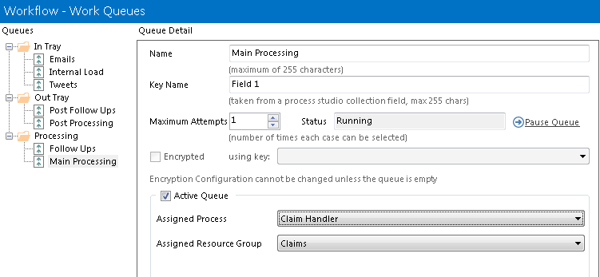

Workflow - Work Queues
Overview
Work Queues are managed from the
Workflow section of
System Manager. This includes creating, deleting, renaming and
configuring queues.
Managing Queues
A list of queues is displayed in the left hand list. The details
of the selected queue are displayed on the right hand side.
- Creating a new Queue
- Click the
New button, and use the panel on the
right to give your queue a name and configure the remaining
details.
- Deleting a Queue
- Select the Queue of interest in the left hand list, and
use the
Delete button. Only queues which are empty
may be deleted. You should first ensure that all items in the
queue have been worked (or manually marked with an exception),
and then deleted from the queue.
- Renaming a Queue
- Select the Queue of interest in the left hand list, and edit
the name on the right hand side. Click
Apply to
finalise your change.
- Changing a Queue's Status
- You may
pause a queue using the link displayed
on the right hand side. A paused queue appears empty to
processes which attempt to select cases from it. A paused queue
can be resumed at any time afterwards.
- Ensure that you have selected the correct queue on the left
before performing this action.
- Configuring the Key Field
- Items are entered into a queue using a process studio collection. Of the fields in this
collection, one of them may be used as the
key for
each item. The key is used to identify items when queue activity is monitored from
Control Room. For example, if you are updating bank accounts in
a list, then you may wish to use the account number as the key
field.
- You do not have to set a key field if this is not desirable.
This may apply, for instance, in cases where the information
being worked on is confidential.
- Setting a Maximum Number of Attempts
- A case may be selected for working, partly updated and not
completed. It will then be picked for working from the queue
again at a later stage. The value you enter here places a limit
on the number of times this will be allowed to happen. Once this
limit is reached, the case will automatically be marked as an
exception.
- To change the
Maximum Attempts setting, select
the queue of interest in the left hand list, and edit the value
on the right hand side. Click Apply to finalise
your change.
- Setting the encrypter / decrypter
- The data held by each work item is stored in plain text on
the database by default. The queue can be configured to encrypt
the data automatically when it is saved to the queue, and
decrypt it automatically when it is retrieved from the queue.
- To enable encryption on a queue, an
Encryption Scheme must be configured for the current environment.
- To change the encryption scheme or disable encryption,
select the queue in the left of the window, and use the checkbox
and drop down list to choose the encryption state of the queue.
- If the key for the selected scheme cannot be found in the server
then it will be appended with
Unresolved Key and, as such,
any work item operations in this queue are likely to fail.
- Like the other queue configurations, changes are not saved
until the
Apply button is pressed.
- Configuring an Active Queue
- A queue can be configured to be 'active', meaning that it
has a process and a resource group assigned to it, giving it
the knowledge necessary to be able to process its items.
- To make a queue active, tick the
Active Queue
checkbox. The assignation fields will be enabled, and the
process and resource group must be selected before the changes
can be saved.
- Note that a resource group must exist before an active
queue can be created.
{kind=link}